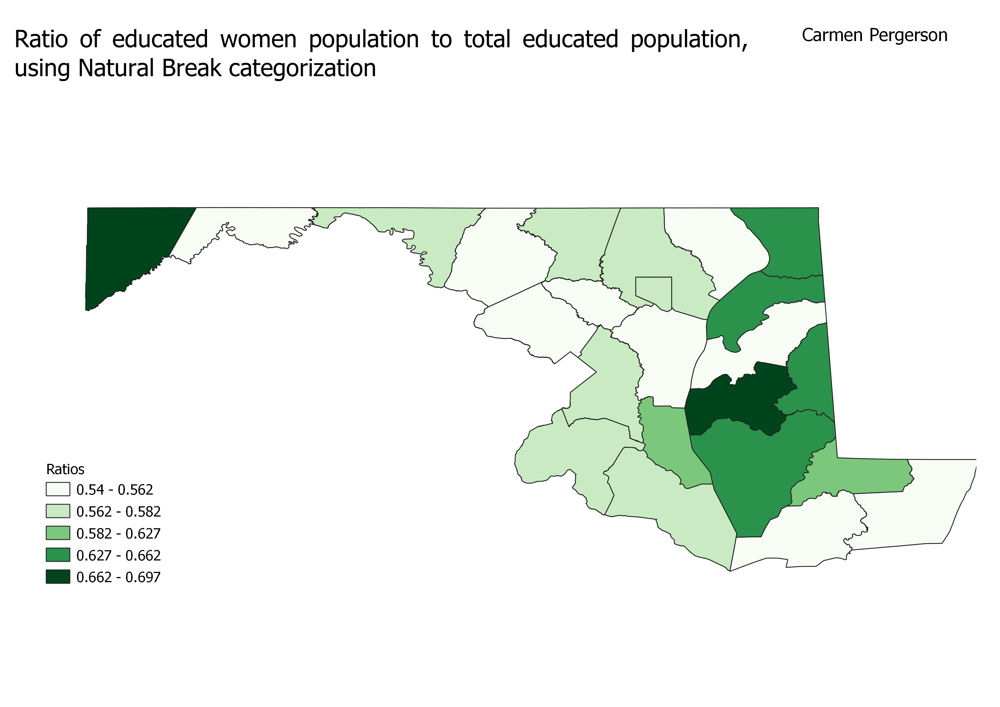
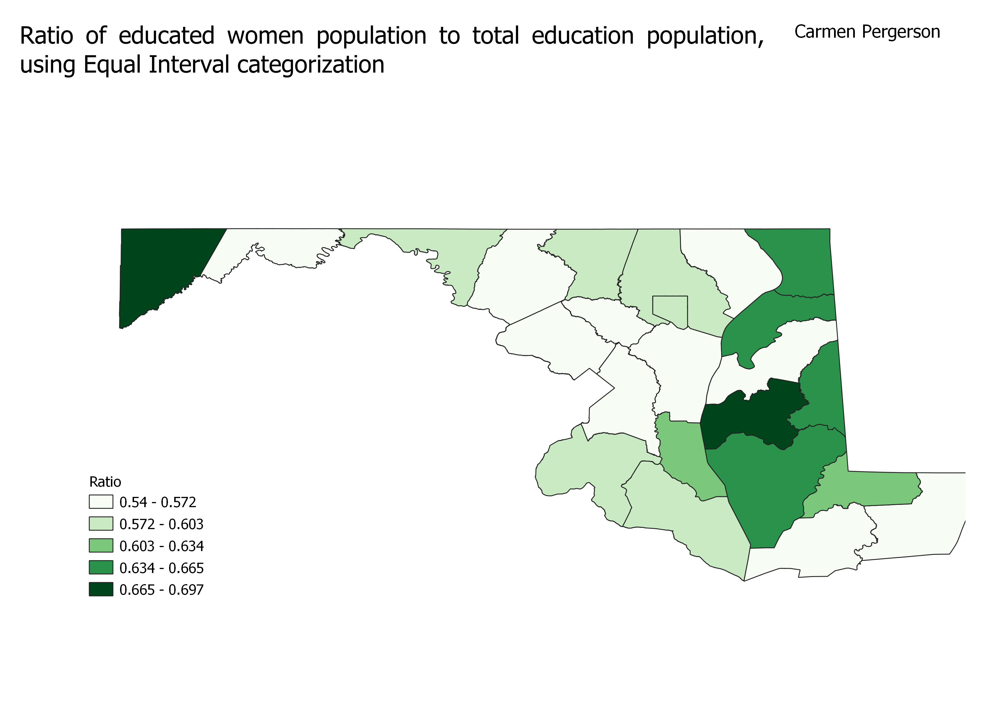
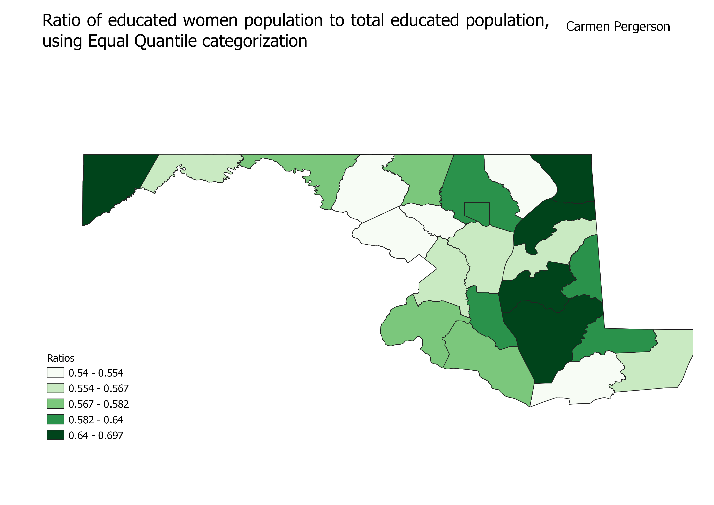

HW 6.2
Natural Break Categorization
As indicated by the red circles or "caps" on the map, the Pseudo Mercator Map distorts the size of the continents. The caps show this, as they do not vary in shape (they are still all perfect circles), but do in size. The bigger circles being toward the poles indicates that continents near the north and south pole appear bigger relative to the other continents than it actually is. For example, Greenland appears to be the same size as the continent of Africa. However, because Greenland is closer to the north pole it is being distorted in this projection to look a lot bigger than reality.

Equal Interval
This projection distorts the the size as well as the shape of the the continents. Which is made appaernt by the varying size and shape of the caps on the map.

Equal Quantile
The list of ratios were put into numerical order
